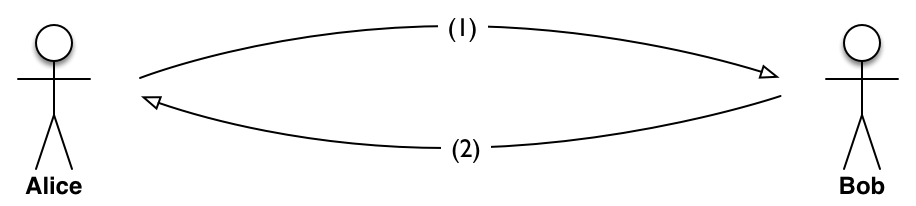

Betrouwbare communicatie¶
Concepten en leerdoelen
- betrouwbare communicatie
- foutkans
- kanaal
- redundantie
- compressie
- foutdetecterende codes en foutherstellende codes
Bij de communicatie tussen Alice en Bob kan er van alles misgaan, zowel bij het transport als bij de interpretatie. Een eerste vereiste voor een betrouwbare communicatie is een betrouwbaar transport van de vorm (datatransport): dat is het thema van dit hoofdstuk.
{kind=link}
We kunnen verschillende niveaus van betrouwbare communicatie onderscheiden:
- Bob weet of het bericht dat hij van Alice ontvangen heeft, ongeschonden aangekomen is;
- Alice weet dat Bob haar bericht ongeschonden ontvangen heeft;
- (Alice weet dat Bob haar bericht juist geïnterpreteerd heeft.)
Merk op dat (1) een vereiste is voor (2), en (2) voor (3). We laten in dit hoofdstuk niveau (3) buiten beschouwing. Bij menselijke communicatie is dat wel een essentieel onderdeel. We noemen hier een verbinding betrouwbaar als Alice weet dat Bob haar bericht ongeschonden ontvangen heeft, aan de hand van een “bericht van ontvangst” dat ze van Bob gekregen heeft.
Een communicatie waarin Alice een bericht verstuurt naar Bob, zonder bevestiging van ontvangst, noemen we “best effort”. Een dergelijke “best effort” communicatie kan voor ons gevoel wel erg betrouwbaar zijn: een brief die je verstuurt met de Nederlands post (PostNL) komt zeer waarschijnlijk aan bij de bestemming. Maar als je zeker wilt weten dat deze aangekomen is, dan kun je deze brief (tegen meerkosten) versturen met “bevestiging van ontvangst”.
Een voorwaarde voor een betrouwbare verbinding (communicatie) is een verbinding die berichten met een redelijke kans ongeschonden kan transporteren. Een belangrijke eigenschap (wet?) is dat we voor een gegeven kanaal de kans dat een bericht ongeschonden getransporteerd wordt willekeurig groot kunnen maken - ten koste van de bandbreedte en de latency.
Foutdetecterende codes¶
Een eerste stap naar betrouwbare communicatie is dat Bob kan controleren of een bericht ongeschonden aangekomen is. Met andere woorden: Bob kan fouten in het bericht detecteren. We gebruiken hiervoor foutdetecterende codes.
Enkele voorbeelden van foutdetecterende codes in het dagelijks leven:
- controlegetal in een bankrekeningnummer (IBAN) (NLxx)
- controlecijfer (laatste cijfer) in een persoonsnummer (Burger Service Nummer, BSN)
- controlecijfer in het betalingskenmerk van een acceptgiro (het eerste cijfer)
Merk op dat het communicatiekanaal waarin deze getallen gebruikt worden vaak menselijke handelingen bevat: een fout die daarbij gemaakt kan worden is het omwisselen van twee cijfers. De genoemde codes zijn daartegen bestand. Machines zullen een dergelijke fout niet snel maken.
Een eenvoudige manier om een bitfout te detecteren in een reeks bits is om er een pariteitsbit aan toe te voegen. Voorbeeld: we voegen bij het verzenden van 7 databits (een ASCII teken) een 8e bit toe zodat de som van deze 8 bits even is (even pariteit). Bij het ontvangen van een teken controleren we of de som van de 8 bits even is: als dat niet het geval is dan is er tenminste 1 bit “omgevallen”. We weten niet welk bit - het kan ook het pariteitsbit zelf zijn. Voorbeeld: bits 1001101 krijgt even pariteit als: 10011010.
In plaats van een enkel pariteitsbit voor een klein groepje bits, kun je ook een langer getal gebruiken om een grotere groep bits of tekens te controleren op veranderingen. Voorbeelden hiervan zijn de Cyclic Redundancy Check (checksum) die gebruikt wordt in een Ethernet of WiFi pakket - zie https://nl.wikipedia.org/wiki/Cyclic_redundancy_check; en een “secure hashcode” zoals SHA-256 die gebruikt wordt voor hele bestanden (zie https://en.wikipedia.org/wiki/Secure_Hash_Algorithms).
Bericht van ontvangst¶
Een volgende stap is dat Bob een bericht van ontvangst (“acknowledgement”) kan sturen aan Alice - zodat zij zeker weet dat de communicatie geslaagd is.
Moet Alice ook een bericht van ontvangst van het bericht van ontvangst sturen? Meestal is dat niet nodig: Alice stuurt gewoon het volgende bericht, waaruit Bob kan opmaken dat zijn bericht van ontvangst aangekomen is. Als Alice dit niet op tijd krijgt, stuurt ze vorige bericht nog een keer.
Voor een bericht van ontvangst - en dus voor betrouwbare communicatie - heb je communicatie in beide richtingen nodig. Hoe ziet het protocol er nu uit? Een mogelijkheid is het volgende:
# Alice stuurt een bericht naar Bob # Als Bob dit bericht “in orde” ontvangt stuurt hij een ontvangstbevestiging (ACK) # Als Alice binnen een bepaalde tijd (“timeout”) geen ACK ontvangt, dan stuurt Alice het bericht nogmaals naar Bob # Als Alice een ACK ontvangt, stuurt ze het volgende bericht
Merk op dat Alice geen verschil merkt tussen een bericht dat verloren raakt en een ACK van Bob die verloren raakt.
Als Alice een serie berichten naar Bob wil versturen, dan levert dit protocol nogal wat vertraging op: (i) zelfs als alles goed gaat, duurt het tenminste tweemaal de latency van de verbinding tussen Alice en Bob voordat Alice een volgend bericht stuurt. (ii) als er een bericht of een ACK verloren raakt, wacht Alice bovendien nog de “timeout” periode voordat ze het bericht opnieuw verstuurt. Er zijn verschillende manieren om dit protocol te versnellen (zie de opdrachten).
Communicatie in twee richtingen heeft vaak de vorm van vraag en antwoord. Een antwoord op een vraag fungeert daarbij vaak als impliciete ontvangstbevestiging. Of anders: als Alice en Bob elkaar vaak genoeg een bericht sturen, dan kan de “acknowledgement” ook onderdeel zijn van een normaal bericht.
Een ontvangstbericht kan ook gebruikt worden om de zendende agent te vertellen dat deze het volgende bericht kan versturen: de ontvanger heeft niet alleen het vorige bericht ontvangen, maar is ook klaar voor het volgende bericht. Dit is een voorbeeld van “control flow” in een protocol, bedoeld om de snelheid van de zender en van de ontvanger op elkaar af te stemmen.
Foutherstellende codes¶
Met behulp van een pariteitsbit kun je zien of er een bit in een teken (byte) “omgevallen” is: veranderd van 0 in 1, of omgekeerd. Je weet dan niet welk bit het betreft: je kunt het bit niet herstellen. Door een paar extra bits toe te voegen kan dit wel: we krijgen dan een foutherstellende code.
Foutherstellende codes worden onder andere op de volgende plaatsen toegepast:
- CD: een kras op een CD kan betekenen dat er bits beschadigd raken. Door het gebruik van een foutherstellende code kunnen de oorspronkelijke bits (meestal) hersteld worden. Hierdoor is de audio-CD minder gevoelig voor krassen dan de analoge langspeelplaat.
- RAID disks: de gegevens worden opgeslagen op meerdere harde schijven, voor een grotere betrouwbaarheid en voor een snellere toegang. Door het gebruik van foutherstellende codes gaan er geen gegevens verloren als er één van de RAID-schijven crasht; in het geval van RAID6 blijven de gegevens zelfs intact als er 2 van de 5 schijven crashen.
- ECC in RAM geheugen: grote geheugens zijn gevoelig voor “soft errors”: fouten die soms optreden, bijvoorbeeld door een langskomend kosmisch deeltje. Door het gebruik van foutherstellende codes worden deze soft errors hersteld. (zie https://en.wikipedia.org/wiki/ECC_memory. )
Hoe werkt een foutherstellende code? We geven het voorbeeld van de Hamming-code, zie https://en.wikipedia.org/wiki/Hamming_code met een parity-bit kun je een bit-error detecteren in een groepje bits door dezelfde databits in verschillende parity-groepen op te nemen kun je bepalen welke van de bits fout is - en dus gecorrigeerd moet worden.
[[Bestand:Hamming-7-4.png|300px|Hamming code (7,4)]]
Bekijk de bovenstaande figuur van de foutherstellende Hammingcode (7,4) - met 3 pariteitsbits en 4 databits. parity-bit p1 detecteert een bit-fout in de groep (d1, d2, d4, p1); p2 in de groep (d1, d3, d4, p2); p3 in de groep (d2, d3, d4, p3). Stel dat d2 fout is: dit betekent dat p1 en p3 een fout detecteren, en p2 niet; d2 is het enige bit dat in de groepen van p1 en p3 valt, en buiten de groep van p2: dus d2 moet gecorrigeerd worden.
Opmerking: zie de goocheltruc die beschreven is in het Wikipedia-artikel.
Merk op dat we met deze Hamming-code met 3 extra bits een enkele bitfout in 4 databits kunnen herstellen; dit is dus veel beter dan het gewoon herhalen van dezelfde 4 databits.
Als je met een groter groep databits werkt, heb je naar verhouding met steeds minder pariteitsbits nodig: met 8 pariteitsbits kun je de enkele bitfouten herstellen in 255-8=247 databits.
Notitie
Bob kan alleen vaststellen of hij het bericht goed ontvangen heeft in het geval van foutdetecterende codes. Hij kan wel vaststellen of hij het bericht ontvangen heeft, maar niet noodzakelijk of dit onbeschadigd is. (Een enkel omgevallen bit kan al een heel andere betekenis geven.) Hoe kun je in het geval van een postpakket of een brief vaststellen dat deze intact aangekomen is? (Je wilt misschien ook weten of iemand anders de brief gelezen kan hebben, of misschien de inhoud veranderd heeft. Dat is een onderdeel van security.)